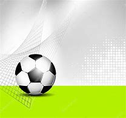

La Selecta agrada a De los Cobos en los primeros entrenos Tras su primer día de entrenos, el técnico mexicano dice que está a gusto con el grupo de jugadores que tiene a cargo, a pesar que llegaron de “emergencia”
SAN SALVADOR. La segunda etapa de Carlos De los Cobos al frente de la Selección Nacional comenzó ayer con un día de trabajo duro, a doble sesión, para tratar de imponer su idea de juego en pocos días, ya que el jueves viajan a Estados Unidos, para enfrentarse a Honduras el sábado, en el estadio BBVA Compass, de Houston.
Alianza vuelve al trabajo.
Alianza regresó este martes a los entrenamientos, pero será un microciclo de una semana,
ya que tienen dos partidos amistosos el 8 y 10 de junio próximo ante el
Olimpia de Honduras, ambos en Estados Unidos.
En la primera sesión de trabajo que realizaron ayer en la nueva cancha de pasto sintético
anexa al estadio Cuscatlán, estuvieron presentes Marlon Cornejo,
Bladimir Díaz, Daley Mena y José “el Puma” Peña, los cuatro refuerzos que presentaron la semana pasada.
Sobre la incorporación de estas piezas y de esos juegos de fogueo habló Herbert Sosa: “Los nuevos jugadores vienen a potenciar a Alianza en ataque. Sabemos que hay mucho por trabajar y el partido contra Olimpia será interesante luego de jugar en Concacaf”.